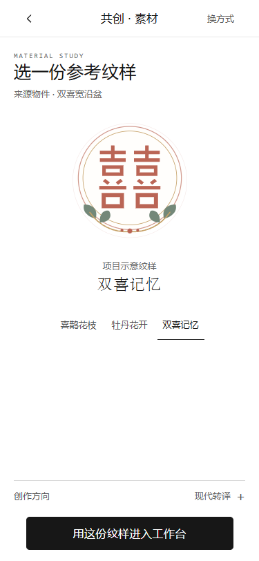

2026-10-30。复用既有 H5、来源/纹样/器型模型、IndexedDB、二维编辑和三个底栏。新增 #inspiration，首页开始共创→灵感输入→原二维编辑；编辑返回灵感，灵感返回原首页/详情。没有开发下一轮编辑功能或发布。
从首页体验 · 浏览器输入测试 · AI测试适配器记录 · 65项测试输出
默认未配置，页面显示「AI生成待接入」，请求按钮不可用。Services.configure('ai', {run}) 复用第01轮适配器；实际请求参数为 sourceObjectId/sourceMotifId/prompt/direction 和独立图片/手绘Blob。配置后需用户勾选同意传输，再调用。返回约定为 {variants:[{blob}]}，接受PNG/JPG/WebP、非空、单张≤12MB；失败或无有效输出显示失败与重试，取消忽略迟到的结果，成功后图片和记录原子落盘。
生成中/失败/成功/重试在独立测试浏览器中注入本地测试适配器验证，明确为测试fixture，没有真实AI请求；适配器没有写入默认应用配置。下一轮方案选择与AI结果编辑未实现。线上接入仍需真实服务、服务端密钥代理、配额、超时策略与隐私说明；不可将密钥放前端。
真实浏览器引擎测试，不代表实体手机。Safari/微信WebView、系统软键盘遮挡及真实AI服务尚未验证。

新增 prototype/inspiration-model.js、inspiration.js、inspiration.css；修改 prototype/app.js（路由/返回/恢复/协调接口）、foundation.js（独立输入兼容）、model.js（历史字段）、storage.js（手绘与AI图像预加载）、schema.d.ts、index.html。新增 tests/inspiration.test.cjs、scripts/qa-round03.cjs、qa-round03-ai.cjs；更新qa-round02.cjs的CTA回归路径。更新根index.html与中文单文件、运行说明、规划记录和本轮截图/报告/测试日志。既有未提交改动保留。
项目目录执行 $env:PORT='8879' 后 npm start；访问 8879本地首页。测试脚本用 PLAYWRIGHT_MODULE 指定已安装Playwright并使用本机Edge，不新增运行时网络依赖。
真实AI、正式馆藏/摄影授权、云同步/公开、馆方积分/审核、工厂授权仍未接入。手绘当前保留最近200笔，每笔最多1500采样点，撤销栈最多30次；刷新后可以逐笔撤销，清空操作的独立撤销历史只在当前会话保留。画板不是无限画布。此轮停止，未提交或部署到公网。